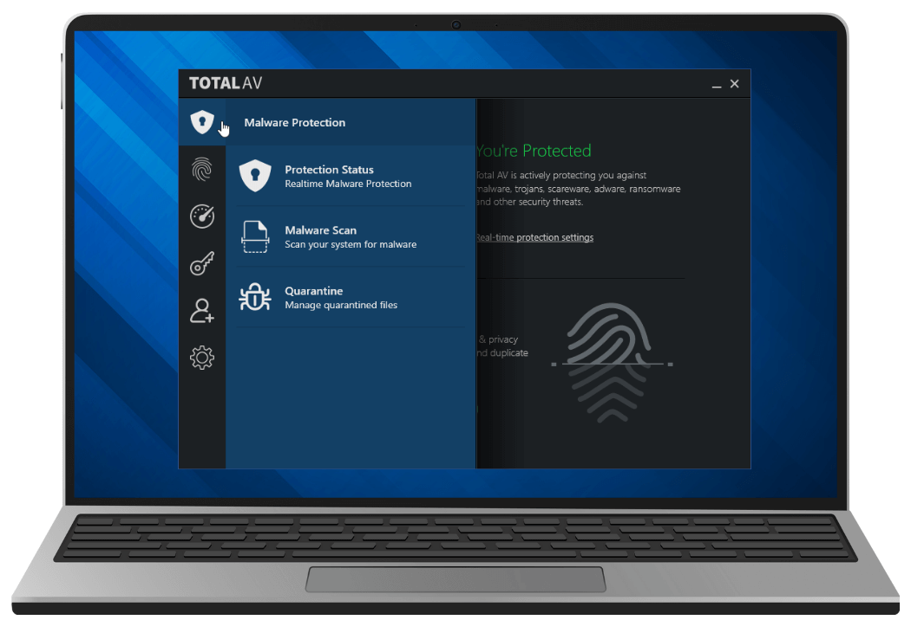
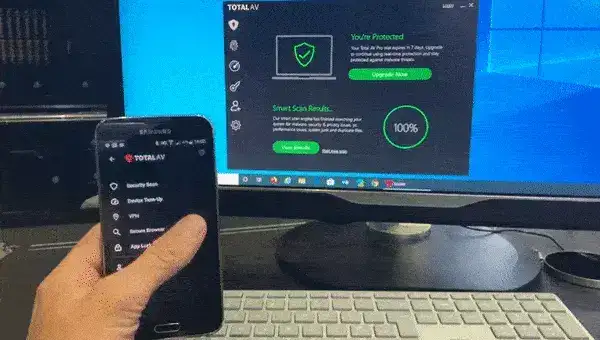

If you’re a Windows PC user, this article is about to become your new best friend. TotalAV, the must-have free Windows app for 2024, has just been upgraded with even more features, and trust us, it’s truly amazing!
If you live in the U.S, you have probably already heard about TotalAV – the popularity of this new app has grown fast among Windows users as more and more people realize their personal data is not as private as it once was.
As the most widely used operating system, Windows is a prime target for malware and viruses. Cybercriminals are constantly developing malicious software that specifically exploits Windows vulnerabilities in order to gain unauthorized access to your personal information.
Did you know that last year, a hacker stole someone’s personal data every 39 seconds? Victims of such fraudulent activities ended up losing an average of $10,000 each, and unfortunately, these numbers are projected to rise in 2024.
That’s where TotalAV comes in….

For years, TotalAV has been protecting internet users with enterprise-level security. And now, with the alarming increase in online scams and fraud, they have developed a comprehensive protection suite specifically tailored for Windows users, and the best part is… Their advanced security scan is now available to the public absolutely FREE!
TotalAV will thoroughly scan your Windows PC, and yes, even your smartphone, for hidden malware. It goes a step further by checking the dark web to see if your personal information has been compromised. It also removes all website tracking cookies, adware, spyware, and viruses, ensuring your devices are clean and secure.
That’s not all! TotalAV has included additional built-in security features to protect you from internet phishing scams and fraudulent websites. Plus, there’s a nifty feature that allows you to easily clear your browser history and cache, giving you peace of mind.

 Tired of
annoying ads? Say goodbye to them with TotalAV! The app lets you disable ads and
choose only the ones you want to see.
Tired of
annoying ads? Say goodbye to them with TotalAV! The app lets you disable ads and
choose only the ones you want to see.- Worried
about your overall security? TotalAV masks all of your online traffic, keeping
your personal information completely private. Its additional network layer
provides enhanced security and even changes your device’s IP address to ensure
maximum protection.
- Fed up
with password management headaches? TotalAV comes with a secure vault where you
can store your passwords, away from hackers and prying eyes. Managing your
passwords will be a dream instead of a nightmare!
With all these incredible features bundled together, it’s no surprise that people are rushing to get their hands on this amazing app, and the best part is, it won’t cost you a penny. TotalAV truly is the only security product you need.
You are probably asking yourself ‘So, is this software really the best Windows PC protection?’
TotalAV has already garnered a reputation for providing users with top-of-the-line computer security. In fact, Trustpilot has ranked them as the #1 Online Security Software. With such high acclaim and at such an unbeatable giveaway, it’s no wonder there’s so much buzz surrounding TotalAV!
Ready to claim your free copy of this outstanding app? Here’s how you can get started:
Step 1: Simply visit the Offical Free Giveaway Here or click the button below.
Step 2: After installation, activate the free security scan
Step 3: Relax as TotalAV analyzes your system performance, identifying any potential harmful threats that need to be quarantined.
If you decide to upgrade to the premium package not only will you receive a huge 80% discount, but you will also be given 2 additional free licenses for your smartphone and/or tablet so be sure to install your protection on those as well, at no extra cost.
This deal won’t last forever, especially as
the app becomes more popular. For now, we are advised that there are free copies available in the
U.S, we recommend installing the app today to make
the most of this free offer.